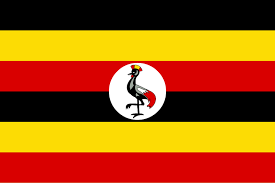

About me
He is a Google-certified digital marketing professional. A specialist in digital marketing and website development. He uses innovative marketing and branding techniques to boost income, raise brand awareness, and strengthen customer relationships for small, medium, and large companies. He has been supporting businesses in establishing a strong digital presence across a variety of social media platforms, including Instagram, Facebook, Twitter, and others.
Kampala Uganda
Uganda is a landlocked country in East Africa whose diverse landscape encompasses the snow-capped Rwenzori Mountains and immense Lake Victoria. Its abundant wildlife includes chimpanzees as well as rare birds. Remote Bwindi Impenetrable National Park is a renowned mountain gorilla sanctuary.